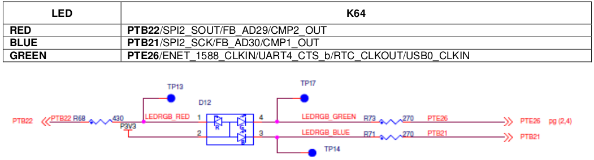
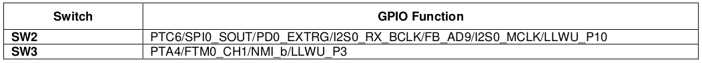
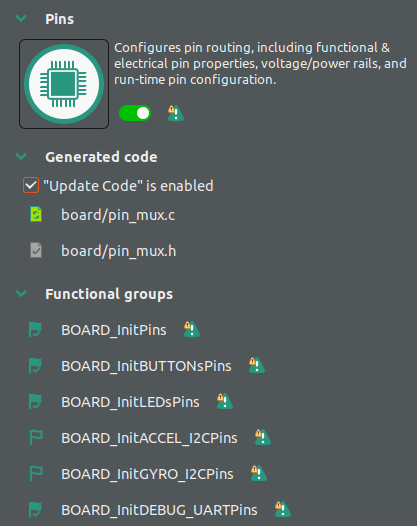
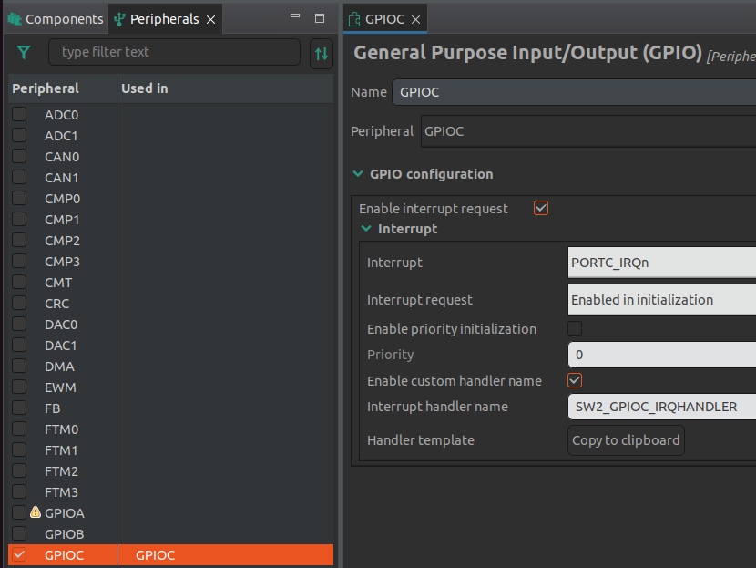

Lab 7 : GPIO and Interrupt
Seneca Polytechnic SEH500 Microprocessors and Computer Architecture
Introduction
Documentation of the Cortex-M4 instruction set can be found here:
- Arm Cortex-M4 Processor Technical Reference Manual Revision (PDF)
- ARMv7-M Architecture Reference Manual (PDF)
Documentation of the Freedom K64 and K66 board and it's microcontroller can be found here:
- FRDM-K64F Freedom Module User’s Guide (PDF)
- Kinetis K64 Reference Manual (PDF)
- FRDM-K66F Freedom Module User’s Guide (PDF)
- Kinetis K66 Reference Manual (PDF)
In this lab, we'll further explore combining assembly language with C programming language and how to use them interchangeablely in a program. In addition, this lab will introduce the use of interrupt to control the blinking of an LED.
Freedom Board Tricolour LED
The Tricolour LED connections on the Freedom K64 board can be found in the FRDM-K64F Freedom Module User’s Guide Section 10.
- Red: Port B Pin 22 (PTB22)
- Green: Port E Pin 26 (PTE26)
- Blue: Port B Pin 21 (PTB21)

Figure 7.1 Tricolour LED connection and schematics
If you are using the Freedom K66F board, the pin configurations is difference. Refer to the FRDM-K66F Freedom Module User’s Guide Section 11 for pin configuration.
- Red: Port C Pin 9 (PTC9)
- Green: Port E Pin 6 (PTE6)
- Blue: Port A Pin 11 (PTA11)
Freedom Board Push Button Switches
The Push Button Switches connections on the Freedom K64 board can be found in the FRDM-K64F Freedom Module User’s Guide Section 13.
- SW2: Port C Pin 6 (PTC6)
- SW3: Port A Pin 4 (PTA4)

Figure 7.2 Buttons connection
If you are using the Freedom K66F board, the pin configurations is difference. Refer to the FRDM-K66F Freedom Module User’s Guide Section 14 for pin configuration.
- SW2: Port D Pin 11 (PTD11)
- SW3: Port A Pin 10 (PTA10)
Procedures
-
Open MCUXpresso then start a new C/C++ project based on the Freedom board model that you have.
-
In the new project configuration, similar to the previous lab, also select "pit" as one of the driver. Rename the project then leave all other settings as default.
-
First, we'll setup the pins for the LED output using assembly code. The onboard LED and buttons are connected to what is known as General Purpose Input/Output (GPIO) pins on the microcontroller. In our case, they are connected to pre-determined pins on the microcontroller board.
Create a file called
function.sin the source folder. Write the following code to it. In the code, create three functions: one for setting up the pins as GPIO output, and the others for turning the LED on and off.If you are using the Freedom K66F board, the pin configurations are difference. Read the lab manual carefully and refer to the K66 documentation as necessary for pin configuration..syntax unified @ unified syntax used .cpu cortex-m4 @ cpu is cortex-m4 .thumb @ use thumb encoding .text @ put code in the code section .global setup @ declare as a global variable .type setup, %function @ set to function type setup: ldr r1, =0x40048038 @ System Clock Gate Control Register 5 (SIM_SCGC5) ldr r0, [r1] @ read current register value orr r0, r0, #(1<<10) @ enable clock for port B (bit 10) @ orr r0, r0, #(1<<11) @ For K66, red LED is at port C (bit 11) str r0, [r1] @ apply the new settings ldr r1, =0x4004A058 @ PTB22 Pin Control Register (PORTB_PCR22) @ldr r1, =0x4004B024 @ For K66, PTC9 Pin Control Register (PORTC_PCR9) mov r0, #0x00000100 @ set pin to GPIO mode str r0, [r1] @ apply the new settings ldr r1, =0x400FF054 @ GPIOB Port Data Direction Register (GPIOB_PDDR) @ldr r1, =0x400FF094 @ For K66, GPIOC Port Data Direction Register (GPIOC_PDDR) mov r0, #(1<<22) @ set pin 22 to output mode @mov r0, #(1<<9) @ For K66, set pin 9 to output mode str r0, [r1] @ apply the new settings bx lr .global func_led_on @ declare as a global variable .type func_led_on, %function @ set to function type func_led_on: ldr r1, =0x400FF040 @ GPIOB Port Data Output Register (GPIOB_PDOR) @ldr r1, =0x400FF080 @ For K66, GPIOC Port Data Output Register (GPIOC_PDOR) mov r0, #0 @ set output to LOW, LED on str r0, [r1] @ apply settings bx lr .global func_led_off @ declare as a global variable .type func_led_off, %function @ set to function type func_led_off: ldr r1, =0x400FF040 @ GPIOB Port Data Output Register (GPIOB_PDOR) @ldr r1, =0x400FF080 @ For K66, GPIOC Port Data Output Register (GPIOC_PDOR) mov r0, #(1<<22) @ set pin 22 output to HIGH, LED off @mov r0, #(1<<9) @ For K66, set pin 9 output to HIGH, LED off str r0, [r1] @ apply settings bx lrIf you are using the Freedom K66F board, the pin configurations is difference. Read the lab manual carefully and refer to the K66 documentation as necessary for pin configuration.Code Explained
The ARM Cortex M4 has been designed with gates to enable/disable the clock to different regions of the processor and therefore reduce the dynamic power that is consumed when those regions are not used. By default, the clock gates to all General Purpose Input/Output (GPIO) ports are disabled. In order to use the Red LED at Port B Pin 22, we need to enable the Port B clock gate.
ldr r1, =0x40048038 @ System Clock Gate Control Register 5 (SIM_SCGC5) ldr r0, [r1] @ read current register value orr r0, r0, #(1<<10) @ enable clock for port B (bit 10) @ orr r0, r0, #(1<<11) @ For K66, red LED is at port C (bit 11) str r0, [r1] @ apply the new settingsThe System Clock Gate Control Register 5 (SIM_SCGC5) stores all the clock gate setting for the GPIO modules. Details of the register can be found in the Kinetis K64 Reference Manual Section 12.2.12. We'll first read the current control settings from SIM_SCGC5 at address 0x40048038. Once the current value is read, we'll change the value for bit 10 to enable clock for port B using the
orrinstruction. For K66, the red LED is at port C so bit 11 should be enabled instead. Refer to the Kinetis K66 Reference Manual Section 13.2.15. After the value is updated, store the new settings to the control register.ldr r1, =0x4004A058 @ PTB22 Pin Control Register (PORTB_PCR22) @ldr r1, =0x4004B024 @ For K66, PTC9 Pin Control Register (PORTC_PCR9) mov r0, #(0b001<<8) @ set pin to GPIO mode str r0, [r1] @ apply the new settingsNext, we'll need to set the red LED pin to GPIO mode so the microcontroller will connect the pin to input/output circuitary. The Pin Control Register (PCR) (PORTB_PCR22) at address
0x4004A058controls the settings for Port B Pin 22. Refer to the Kinetis K64 Reference Manual Section 11.5.1 for PCR details and Section 11.5 for PORT memory map. For K66, (PORTC_PCR9) is at address0x4004B024. Refer to the Kinetis K66 Reference Manual Section 12.5.1 for PCR details and Section 12.5 for PORT memory map. We need to set Pin MUX Control (bit 8-10) to GPIO0b001. Since PORTB_PCR22 will only affect Port B Pin 22, we can overwrite the entire setting to ensure the pin will only operate in GPIO mode by storing the new settings as0x00000100.ldr r1, =0x400FF054 @ GPIOB Port Data Direction Register (GPIOB_PDDR) @ldr r1, =0x400FF094 @ For K66, GPIOC Port Data Direction Register (GPIOC_PDDR) mov r0, #(1<<22) @ set pin 22 to output mode @mov r0, #(1<<9) @ For K66, set pin 9 to output mode str r0, [r1] @ apply the new settingsLastly, in order for the microcontroller to know how to handle the GPIO pin, we need to set the signal flow of the pin as either input or output. The GPIOB Port Data Direction Register (PDDR) (GPIOB_PDDR) at address
0x400FF054control such settings and we need to set bit 22 for pin 22 to 1 so it's configured as an output pin. The circuitary for a pin in input mode and output mode is not the same so they must be configured properly. Refer to the Kinetis K64 Reference Manual Section 55.2.6 for GPIO PDDR details and Section 55.2 for GPIO memory map. For K66, (GPIOC_PDDR) is at address0x400FF094. Refer to the Kinetis K66 Reference Manual Section 63.3.6 for GPIO PDDR details and Section 63.3 for GPIO memory map.ldr r1, =0x400FF040 @ GPIOB Port Data Output Register (GPIOB_PDOR) @ldr r1, =0x400FF080 @ For K66, GPIOC Port Data Output Register (GPIOC_PDOR) mov r0, #(1<<22) @ set pin 22 output to HIGH, LED off @mov r0, #(1<<9) @ For K66, set pin 9 output to HIGH, LED off str r0, [r1] @ apply settingsTo control the power output of each pin, we need to set the output setting of the pin to HIGH. This can be set using the GPIOB Port Data Output Register (PDOR) (GPIOB_PDOR) at address
0x400FF040. For the Freedom board, the LED circuit is connected so a logic level of LOW will turn the LED on and HIGH will turn the LED off. Therefore, we'll set bit 22 for pin 22 to 1 or 0 depending on how we want to control the LED. Refer to the Kinetis K64 Reference Manual Section 55.2.1 for GPIO PDOR details and Section 55.2 for GPIO memory map. For K66, (GPIOC_PDOR) is at address0x400FF080. Refer to the Kinetis K66 Reference Manual Section 63.3.1 for GPIO PDOR details and Section 63.3 for GPIO memory map. -
Next, place the
setup(),func_led_on()andfunc_led_off()function prototypes at the top of your C-code and their respective function calls before thewhileloop in your main function. You can also comment out or remove the print statement from the default code.void setup(); void func_led_on(); void func_led_off();Add the following before the
whileloop:setup(); func_led_on(); func_led_off(); -
Build and run your code in debug mode. Step Over (F6) the initial functions until you get to the setup function. Then Step Into (F5) the
setup(),func_led_on(), andfunc_led_off()functions. You should see the debug cursor jump into the assembly code infunction.s. Keep stepping through the code and the RED led should turn on and off. -
Next, we'll setup an interrupt with the onboard button to control the LED. To do that, we'll use the ConfigTools to help setup the interrupt as setting it up using assembly require knowledge of the vector table and interrupt register (a more lengthy process that we will not explore in this lab). Right click on your project in the Project Explorer and open the MCUXpresso Config Tools > Open Tools Overview windows.
Under Pins > Functional groups, enable:
- BOARD_InitPins
- BOARD_InitBUTTONsPins
- BOARD_InitLEDsPins
- BOARD_InitDEBUG_UARTPins
by clicking on the flag to ensure there's a check mark. Refer to the figure below and notice the green flags with check mark in front the respective functional groups.

Figure 7.3
Under Peripherals > Functional groups, also enable the following in a similar manner:
- BOARD_InitPeripherals
Click Close and Update Code on the top menu.
-
Next, open the ConfigTools > Peripherals Windows or right-click on the project from the Project Explorer Project > MCUXpresso Config Tools > Open Perripheral. On the left hand side, go to the "Peripherals" tab. Check GPIOC for SW2 at Port C Pin 6 (PTC6). When prompted to "Add Configuration Component Instance", select the GPIO component with General Purpose Input/Output (GPIO) in the component description. If you've previously added another component, right click on GPIOC and remove them.
If you are using the Freedom K66F board, SW2 is at Port D Pin 11 (PTD11). Check GPIOD for the port and use SW2_GPIOD_IRQHANDLER as the function name in the next step. -
Check "Enable interrupt request" then check "Enable custom handler name". We'll name it: SW2_GPIOC_IRQHANDLER. Once done, click "Update Code" near the top.

Figure 7.4
-
Repeat the last step for SW3 at Port A Pin 4 (PTA4), ie. GPIOA. Name the handler as SW3_GPIOA_IRQHANDLER. Switch 3 is also at Port A for the K66 board so no modification is required for this step.
-
Lastly, add the following two interrupt handler functions at the end of your C-code (outside of your main function) and comment out or remove the function call:
setup(),func_led_on(),func_led_off()in the assembly code. We'll use he built in LED function from MCUXpresso to control the LED.void SW2_GPIOC_IRQHANDLER(void) //Interrupt Service Routine for SW2 { // clear interrupt flag set by button SW2 connected to pin PTC6 GPIO_PortClearInterruptFlags(GPIOC, 1U << 6U); LED_RED_ON(); // turn ON RED LED } void SW3_GPIOA_IRQHANDLER(void) //Interrupt Service Routine for SW3 { // clear interrupt flag set by button SW3 connected to pin PTA4 GPIO_PortClearInterruptFlags(GPIOA, 1U << 4U); LED_RED_OFF(); // turn OFF RED LED }For K66:
void SW2_GPIOD_IRQHANDLER(void) //Interrupt Service Routine for SW2 { // clear interrupt flag set by button SW2 connected to pin PTD11 GPIO_PortClearInterruptFlags(GPIOD, 1U << 11U); LED_RED_ON(); // turn ON RED LED } void SW3_GPIOA_IRQHANDLER(void) //Interrupt Service Routine for SW3 { // clear interrupt flag set by button SW3 connected to pin PTA10 GPIO_PortClearInterruptFlags(GPIOA, 1U << 10U); LED_RED_OFF(); // turn OFF RED LED }Run your code and the LED should turn on and off as you press the buttons.
Post-Lab Questions
Submission of answers or code generated by AI, or from external help, containing concepts or instructions not shown/taught/discussed in this course will immediately result in a report of Academic Integrity violation.
If GenAI was used as a learning aid, you must cite it for every answer that used GenAI as a tool, as follows:
- GenAI used: Copilot for concept research; ChatGPT for editing and grammar enhancement; Gemini for code generation in section 1, as identified.
Using the skills and knowledge acquired from this lab, answer the following post-lab question(s) on Blackboard. Due one week after the lab.
-
Using the Reference Manual of the processor on your Freedom board, find the address of the Pin Control Register (PCR), Port Data Direction Register (PDDR), and Port Data Output Register (PDOR) for the Green LED and Blue LED. See the example code from this lab for a reference to the Red LED.
-
Modify the example assembly code so all three colours of the LED will turn on and off at the same time. Then use func_led_on() and func_led_off() in the interrupt handler to see its effect. Paste or take a screenshot of your assembly code and paste a photo of the LEDs turned on into blackboard. When the RGBs LEDs are turned on together, they should produce a white light. No mark will be awarded if no screenshot and photos with the expected result are provided.
-
Implement the same timer interrupt from Lab 6 and use it to turn the LED (any colour) on and off at regular interval (ie. 1s). Copy or take a screenshot of your interrupt handler code and paste it into blackboard. No mark will be awarded if no screenshot of the expected result is provided.
Reference
[1] Yiu, J. (2013). The Definitive Guide to ARM® Cortex®-M3 and Cortex®-M4 Processors. (3rd ed.). Elsevier Science & Technology.